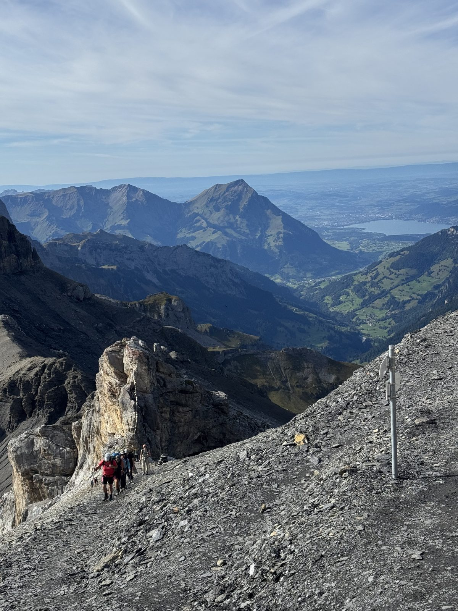
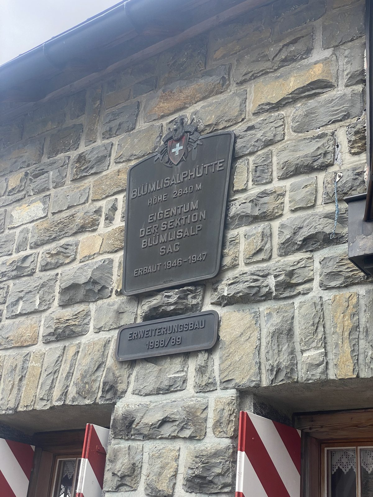
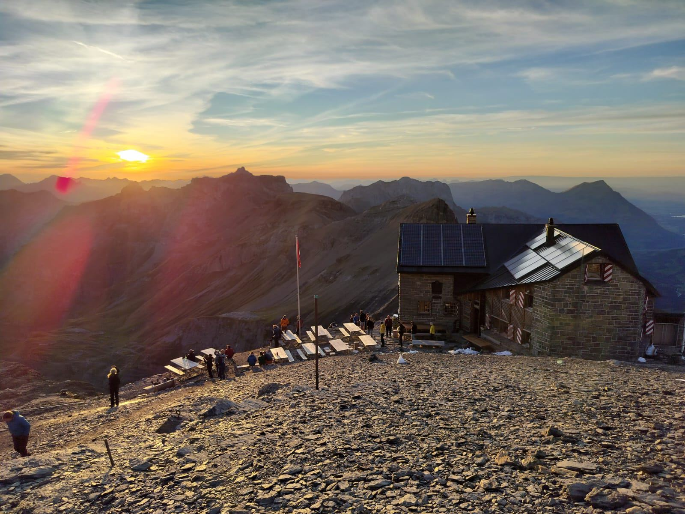
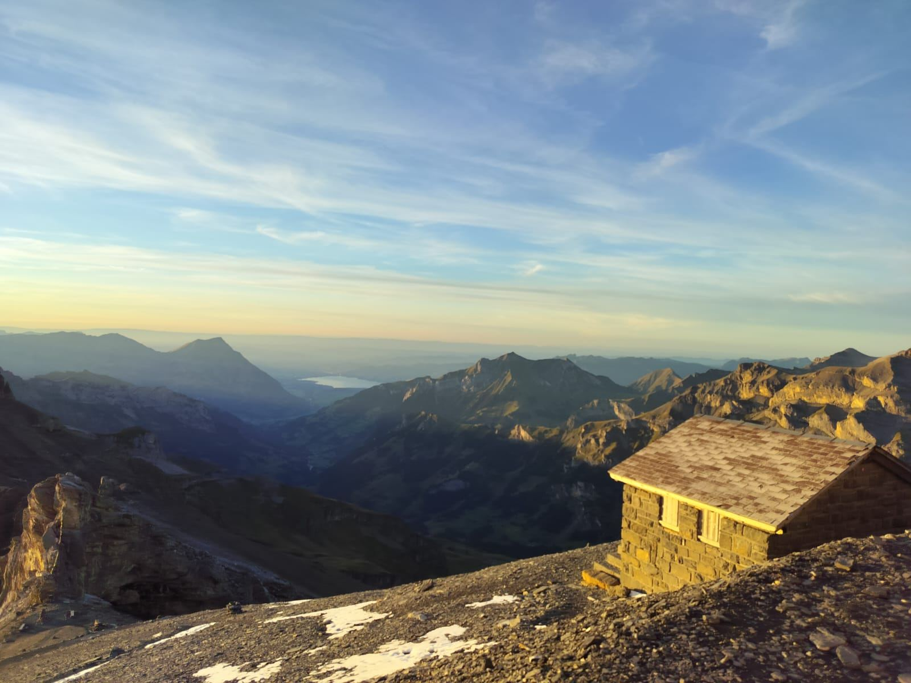
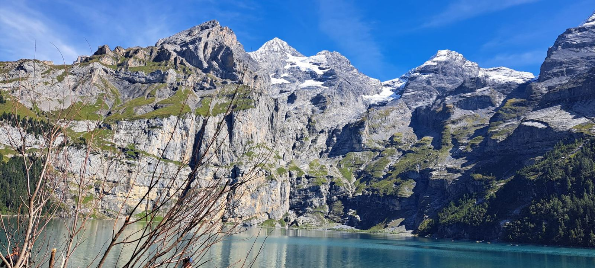
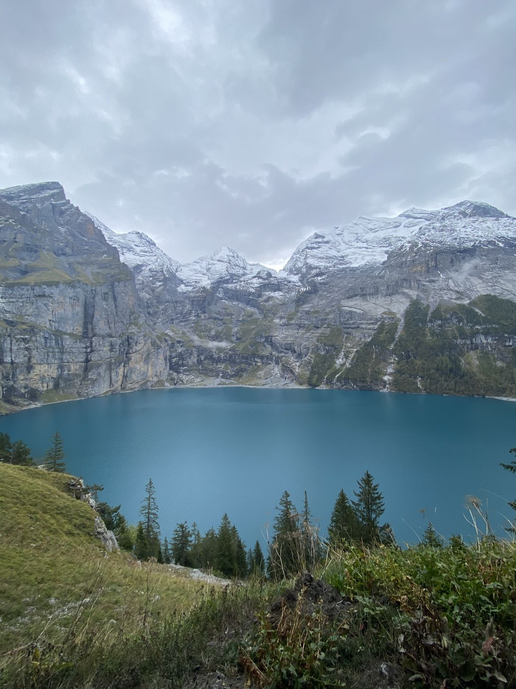
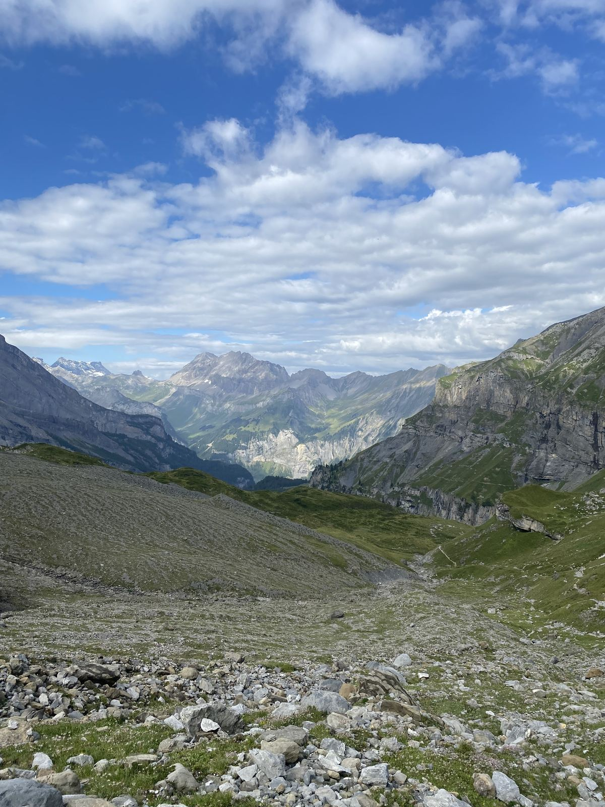

Subes por el valle de Griesalp, duermes a 2.840 m en un refugio del Club Alpino Suizo, ves el amanecer sobre los Alpes y bajas al lago azul del Oeschinensee, con baño opcional. Esto es lo que necesitas saber.

Es una de las rutas de montaña más completas del Oberland bernés: cruzas desde el valle de Kiental hasta Kandersteg pasando por el paso del Hohtürli (2.778 m) y durmiendo en la Blüemlisalphütte (2.840 m), a los pies del macizo de la Blüemlisalp. Al día siguiente bajas al Oeschinensee, uno de los lagos más fotografiados de Suiza, y de ahí a Kandersteg.
Hecha en dos días es una experiencia distinta a hacerla de corrido: llegas al refugio con tiempo, cenas con vistas y ves el atardecer y el amanecer en la alta montaña.
Datos de Bergwelten (Griesalp – Hohtürli – Kandersteg: 16,1 km, 7 h 45 min en total, T3). La SAC clasifica el ascenso desde Griesalp al refugio como T2 (4 h, 1.450 m); BLS y Bergwelten lo clasifican T3. Fuentes al final de la página.
El nombre significa algo así como "alpe de las florecillas". La Blüemlisalp es un macizo glaciar de cumbres de más de 3.600 m: el Blüemlisalphorn (3.660 m) es el más alto, junto a la Wyssi Frau (3.648 m) y el Morgenhorn (3.620 m). La tradición popular cuenta que allí hubo antes un alpe riquísimo cuyos habitantes, por soberbia, quedaron sepultados bajo el hielo. Es una leyenda, pero ayuda a imaginar por qué esta pared de hielo sobre prados verdes impresiona tanto.
El Blüemlisalphorn se escaló por primera vez el 27 de agosto de 1860: Leslie Stephen, R. Liveing y J. K. Stone, con los guías Melchior Anderegg y Pierre Simond. Salieron de los chalets de Oeschinen a las 2 de la mañana y llegaron a la cima hacia las 8. Por eso el macizo se conoce como una de las cunas del alpinismo.
La Blüemlisalphütte pertenece a la sección Blüemlisalp del Club Alpino Suizo (SAC), a 2.840 m, muy cerca del Hohtürli. Es punto de partida de muchas ascensiones de la zona, y a pocos minutos hay una zona de escalada. Tiene más de cien plazas y forma parte de la ruta de varios días llamada Bärentrek.
La placa de la fachada lo dice: el edificio se construyó en 1946–1947 y se amplió en 1988/89. En el verano de 2023 hubo obras, y el refugio siguió abierto a los huéspedes.

El Oeschinensee está a 1.578 m, tiene algo más de 1 km² y unos 56 m de profundidad. Se formó por antiguos deslizamientos de roca que represaron el valle. En los siglos XVII y XVIII se extrajo azufre en la Oeschinenalp, y desde 2007 el lago forma parte del Patrimonio Mundial de la UNESCO Alpes suizos Jungfrau-Aletsch.
Tren hasta Reichenbach im Kandertal (hay Regio-Express cada hora desde Berna o Brig) y de ahí el PostAuto 220 hasta Griesalp. BLS lo describe como la ruta de bus más empinada de Europa: son curvas muy cerradas, vale la pena ir con calma. En 2026 circuló del 23 de mayo al 18 de octubre. Confirma los horarios cada temporada en BLS y SBB.
Hay parqueaderos de pago en Tschingelsee y en la Griesalp. Ten en cuenta que terminas en Kandersteg, no donde dejaste el carro, así que planifica el regreso: lo más práctico es llegar en transporte público.
El final está en Kandersteg, que tiene estación de tren. Desde el valle de la góndola hay bus a la estación. Si vas a bajar en la góndola del Oeschinensee, esta funcionó en 2026 de 8:30 a 18:00 (hasta el 20 de septiembre) y hasta las 17:00 (21 de septiembre a 8 de noviembre); el billete de bajada costaba CHF 26,20 para adultos y CHF 14,10 con Medio Tarifa o para niños. Verifica horarios y precios antes de ir.
Fuentes: BLS, Hohtürli-Passwanderung y Oeschinensee, góndola.
Subida de unas 4 a 4 h 30 de marcha efectiva, con +1.450 m de desnivel. Con pausas, cuenta de 5 a 6 horas.


Bajada de unos 1.680 m. Cuenta de unas 3 a 4 h de marcha hasta Kandersteg, sin las pausas y sin el baño (7 h 45 min de ruta total menos la subida del primer día).



Tiempos de referencia de caminata continua. Fuente de la ruta: Bergwelten, Hohtürli y Blüemlisalphütte.
Sí se puede: el baño está permitido, por cuenta y riesgo de cada persona. No hay vestuarios, duchas ni salvavidas. Las orillas sur y oeste, de poca profundidad, son las más usadas para refrescarse.
Son dos días. El primero sube de Griesalp al refugio (unas 4 a 4 h 30 de marcha, +1.450 m). El segundo baja por el Oeschinensee hasta Kandersteg (unas 3 a 4 h de marcha, sin contar las pausas y el baño).
Es una ruta de montaña exigente, T3 en la escala SAC según BLS y Bergwelten. Tiene un tramo empinado con cadenas hacia el Hohtürli y una bajada fuerte. Hace falta buena condición física y no tener vértigo.
Sí, hay quien la hace de corrido: unos 16 km y cerca de 7 h 45 de marcha según Bergwelten, con +1.450 m de subida. Dormir en el refugio permite hacerla con calma y ver el atardecer y el amanecer en la montaña.
La Blüemlisalphütte atiende con servicio de mediados de junio a mediados o finales de octubre, y funciona a pleno de julio a septiembre. Fuera de esas fechas solo queda abierto el refugio de emergencia. Reserva siempre con antelación.
Sí, el baño está permitido, por cuenta y riesgo propio. No hay vestuarios, duchas ni salvavidas. El agua es fría, de lago de montaña, así que conviene entrar con calma y por poco tiempo.
Puedes seguir a pie junto al arroyo Oeschibach hasta Kandersteg, o tomar la góndola desde el lago para los últimos 400 m de desnivel. La góndola tiene horarios por temporada, así que confírmalos.
Un saco sábana (obligatorio: el refugio da cobijas pero no sábanas), tarjeta o efectivo para las bebidas, ropa abrigada, una linterna frontal y calzado de montaña. La cena y el desayuno van incluidos si vas con Clas Tours.
Los horarios, precios y estado de caminos cambian cada temporada; verifícalos antes de ir.
Organizo esta ruta con grupos pequeños: planificación, orientación y toda la información en tu idioma, para que solo te dediques a disfrutarla.
por persona · todo incluido (guía, noche en refugio, cena y desayuno) · mínimo 2 personas
Grupos de 7 o más: CHF 260 por persona · máximo 10 personas
Escríbeme directamente y te respondo, sin formularios. También puedo armar una fecha para tu grupo.
Escribir por WhatsApp → Preguntas frecuentes